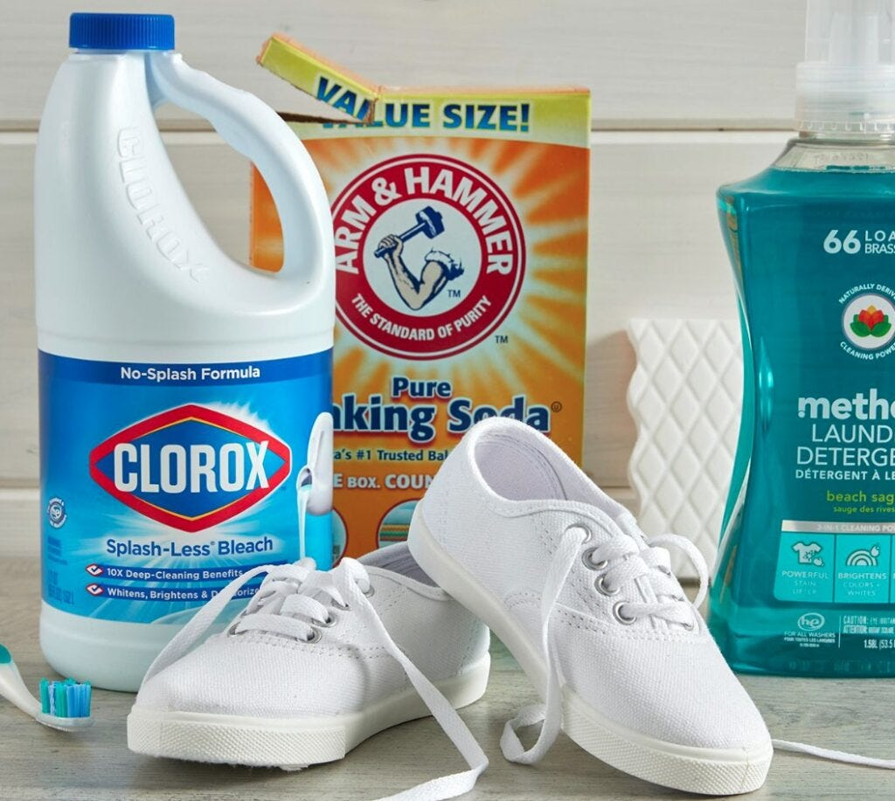

Oleh karena itu, penting untuk memahami metode yang tepat — mulai dari pembersihan ringan hingga pencucian menyeluruh. Dalam panduan ini, ShoeWash — jasa cuci sepatu express yang beroperasi di area kampus dan kost — merangkum tips praktis berdasarkan pengalaman langsung merawat ratusan pasang sneakers mahasiswa. Selain itu, kamu juga akan tahu kapan waktunya menyerahkan urusan ini ke profesional.
Lihat juga
Apa Cara Terbaik untuk Membersihkan Sepatu?
Cara terbaik membersihkan sepatu bergantung pada jenis kotoran dan bahan sepatu. Namun, ada prinsip umum yang berlaku untuk sebagian besar sneakers berbahan kanvas, mesh, atau kulit sintetis.
1. Siapkan alat yang tepat
Sebelum mulai, siapkan perlengkapan berikut agar hasilnya maksimal:
- Sikat gigi bekas atau sikat sepatu berbulu lembut
- Sabun cuci piring atau sabun khusus sepatu
- Air hangat dalam wadah kecil
- Kain microfiber atau handuk bersih
- Penghapus sol atau eraser khusus untuk bagian karet
2. Mulai dari bagian sol
Banyak orang melewatkan bagian sol, padahal kotoran menumpuk paling banyak di sana. Gunakan sikat kaku untuk membersihkan tanah dan debu dari alur sol. Selanjutnya, lap dengan kain basah hingga bersih.

3. Bersihkan bagian upper (badan sepatu)
Campurkan sedikit sabun dengan air hangat. Celupkan sikat, lalu gosok bagian upper dengan gerakan melingkar. Hindari merendam seluruh sepatu karena hal ini bisa merusak lem dan struktur sepatu. Ingat: bagian dalam lidah sepatu juga sering terlewat dan menjadi sumber bau.
4. Bilas dan keringkan dengan benar
Lap sisa sabun dengan kain basah bersih. Kemudian, isi bagian dalam sepatu dengan kertas koran untuk mempertahankan bentuk dan menyerap kelembapan. Jangan menjemur di bawah sinar matahari langsung karena bisa membuat warna memudar dan sol mengeras.
Bagaimana Cara Mencuci Sepatu dalam 5 Menit?
Tidak punya banyak waktu? Metode cepat ini cocok untuk kotoran ringan dan situasi darurat — misalnya sebelum kelas pagi atau saat mau nongkrong mendadak.
Metode dry cleaning kilat
- Lap permukaan sepatu dengan tisu basah atau wet wipes
- Gunakan penghapus sol putih untuk noda di bagian karet
- Semprotkan dry shampoo atau bedak bayi ke dalam sepatu untuk mengurangi bau
- Sikat ringan bagian tali dengan sikat gigi kering
Metode ini tidak menggantikan cuci menyeluruh, namun cukup efektif untuk menjaga sepatu tampak rapi di hari-hari sibuk. Selain itu, metode ini juga aman untuk hampir semua jenis material sneakers.
Kapan metode 5 menit tidak cukup?
Jika sepatumu sudah terkena lumpur, noda membandel, atau berbau tidak sedap meski sudah dilap, itu tanda bahwa pencucian mendalam diperlukan. Dalam kondisi ini, menggunakan jasa cuci sepatu terdekat adalah pilihan paling efisien, terutama bagi mahasiswa yang waktunya terbatas.

Bagaimana Cara Mencuci Sepatu yang Kotor Berat?
Untuk sepatu yang sudah benar-benar kotor — entah karena hujan, aktivitas outdoor, atau tidak dicuci dalam waktu lama — diperlukan proses yang lebih menyeluruh.
Langkah lengkap mencuci sepatu kotor
- Lepas tali sepatu dan cuci terpisah dengan cara direndam dalam air sabun selama 15 menit
- Ketuk sol ke permukaan keras untuk melepas kotoran padat yang menempel
- Gosok seluruh permukaan dengan sikat dan larutan sabun secara merata
- Beri perhatian ekstra pada noda yang mengering — gunakan sedikit baking soda sebagai abrasif lembut
- Bilas dengan air bersih menggunakan kain, jangan dicelupkan langsung ke air
- Keringkan di tempat teduh yang berangin selama 12–24 jam
Bahan yang harus dihindari
Beberapa bahan umum justru berbahaya untuk sepatu:
- Pemutih (bleach) — merusak serat dan mengubah warna material
- Air panas — melonggarkan lem dan merusak bentuk sepatu
- Detergen keras — meninggalkan residu dan membuat bahan kaku
Jika sepatumu berbahan suede atau kulit asli, proses di atas tidak disarankan. Material tersebut memerlukan produk perawatan khusus. Dalam kasus ini, menyerahkan ke jasa cuci sepatu murah yang berpengalaman adalah keputusan yang jauh lebih aman.

Tidak mau repot? Percayakan ke ShoeWash!
ShoeWash adalah jasa cuci sepatu express yang beroperasi di sekitar kampus dan area kost. Cukup titip sepatumu, dan kami kembalikan dalam kondisi bersih — tanpa kamu harus menghabiskan waktu dan tenaga.
- Pengerjaan cepat hanya 2–3 jam
- Harga terjangkau, cocok untuk mahasiswa (mulai Rp 20.000)
- Spesialis sneakers berbahan kulit dan canvas
- Menggunakan produk pembersih aman & premium
FAQ — Pertanyaan yang Sering Ditanyakan
Sebaiknya tidak, terutama untuk sneakers premium. Mesin cuci bisa merusak lem, mengubah bentuk, dan membuat sol terlepas. Cuci tangan atau menggunakan jasa cuci sepatu profesional jauh lebih aman.
Sepatu yang dipakai setiap hari idealnya dicuci ringan setiap 1–2 minggu dan dicuci menyeluruh setiap 1–2 bulan. Frekuensi bisa meningkat jika kamu aktif di luar ruangan atau musim hujan.
Bisa, asalkan jasanya berpengalaman dan menggunakan produk yang tepat. ShoeWash menggunakan produk perawatan khusus sneakers dan ditangani oleh tim terlatih, sehingga hasil bersih tetap terjaga meski dengan harga terjangkau.
Masukkan baking soda ke dalam sepatu dan biarkan semalaman, lalu kocok sebelum dipakai. Selain itu, pastikan sepatu benar-benar kering sebelum disimpan karena kelembapan adalah penyebab utama bau.
Umumnya 12–24 jam di tempat teduh yang berangin. Jangan dijemur di bawah matahari langsung karena bisa merusak material dan warna. Isi bagian dalam dengan kertas koran untuk mempercepat proses pengeringan.
Kesimpulan
Cara mencuci sepatu yang benar dimulai dari memahami jenis kotoran, memilih alat yang tepat, dan mengeringkan dengan cara yang aman. Untuk kotoran ringan, metode 5 menit bisa menjadi solusi cepat. Namun, untuk sepatu yang sudah sangat kotor atau berbahan khusus, diperlukan penanganan yang lebih menyeluruh.
Jika kamu tidak punya waktu atau ingin hasil terbaik tanpa risiko, ShoeWash hadir sebagai solusi jasa cuci sepatu murah dan terpercaya di area kampus. Percayakan sneakers kesayanganmu kepada kami.
Referensi Eksternal (EEAT)
- Nike Product Care Guide: How to Clean Your Shoes in 6 Easy Steps — Panduan lengkap untuk mencuci Sepatu Sneakers dari Nike
- Good Housekeeping: The Right Way to Clean Every Type of Shoe, According to Cleaning Experts — Panduan cara membersihkan segala macam sepatu, menurut ahlinya
- Runner's World: How to Clean Shoes After Your Runs — Panduan bagaimana cara mencuci sepatu setelah digunakan untuk olahraga lari